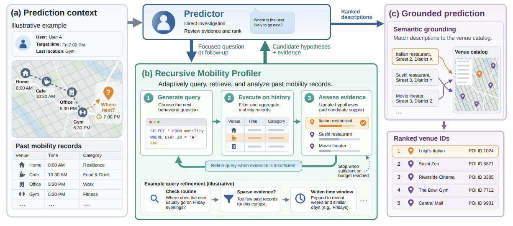

RAMA: Recursive Adaptive Mobility Agents for Next-Location Prediction
Submitted to NAACL 2027 Under review
📄 Paper soon 💻 Code soon
Abstract
Human mobility reflects complex interactions among personal routines, temporal context, and spatial behavior, making next-location prediction challenging for large language models (LLMs). Existing zero-shot LLM approaches typically reason over entire trajectory histories, static summaries, or predefined reasoning pipelines, limiting their ability to adapt evidence acquisition to each prediction. We introduce RAMA, a recursive adaptive agentic framework in which an LLM directly interrogates structured mobility histories. At each reasoning step, RAMA generates an executable retrieval program, evaluates the resulting behavioral evidence, updates a persistent reasoning state, and adaptively determines what evidence to retrieve next and when to terminate. Across seven cities from the TIST2015 and Gowalla datasets, RAMA consistently outperforms AgentMove under controlled comparisons using the same LLM backbone and evaluation samples, while also comparing favorably with strong supervised baselines. Additional analyses show that RAMA adapts its retrieval depth to what each prediction requires, remains effective across LLM backbones, and yields its largest gains for low-predictability users. Finally, we propose Mobility Tree-of-Thought (M-ToT), an interpretable view of execution traces showing how evidence is progressively acquired, evaluated, and refined into next-location predictions.